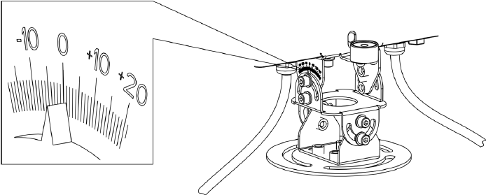

安装雷达
- 将3颗M6固定螺钉依次穿过雷达底座的安装孔、抱装支架的2号孔位（2号孔位标识请参见实物丝印），再拧上螺钉，如图1所示。
- 将3根抱箍环穿过抱装支架的安装孔，并环绕在横杆上；然后拧紧抱箍，使雷达固定到横臂上，如图2所示。
- 轻微旋转雷达的左右两侧，使顶部的瞄准器对准检测区域的中心线，再拧紧雷达底座上的3颗M6螺钉，如图3所示。
- 调节雷达支架组件内六角M4螺栓，使气泡水平仪的气泡位于中央（即雷达处于水平状态），如图4所示。
- 根据雷达的安装高度和探测方向，轻微上抬或者下压雷达，调整雷达俯仰角度α后再拧紧螺栓。当安装高度6m左右时，推荐雷达俯仰角度α为2°。图5 雷达倾角α示意

雷达的检测范围为30-250米，安装时需要在上位机观察车辆最远的跟踪距离有没有达到250米。照射范围无遮挡弯道的情况下，如果有大量车辆提前消失，可能是因为雷达照射角度偏低。
- 分别连接雷达电源线、网口，接线说明请参见表1。
在连接网线时，先把雷达网线接口上防水套件依次旋转拆卸，再穿入网线。插好网线后，再拧紧网线防水套件各组件。